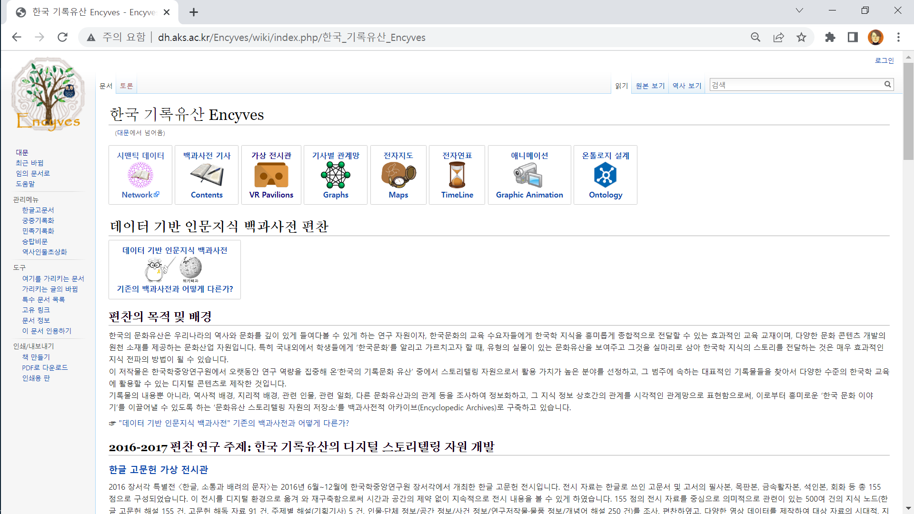
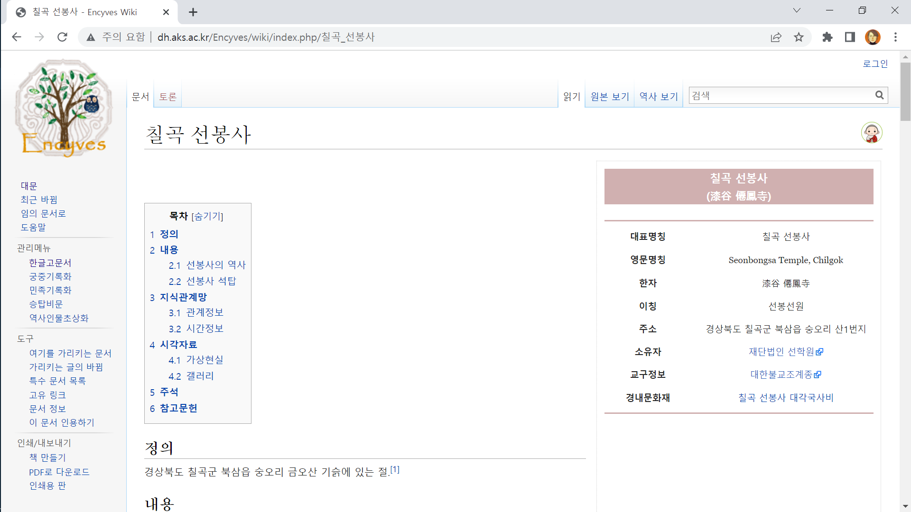
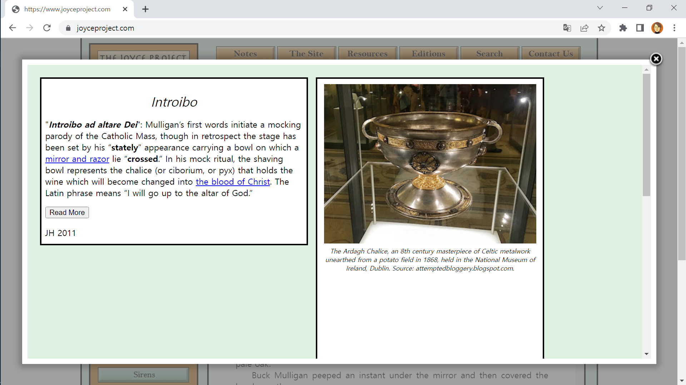
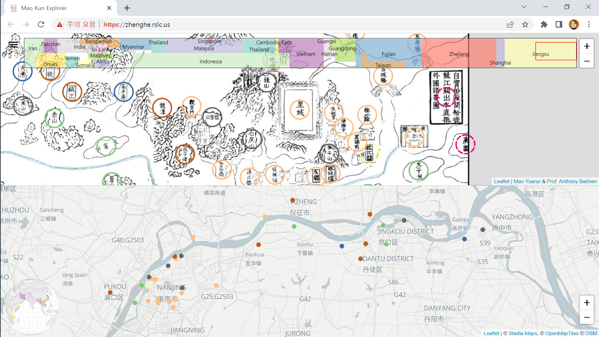
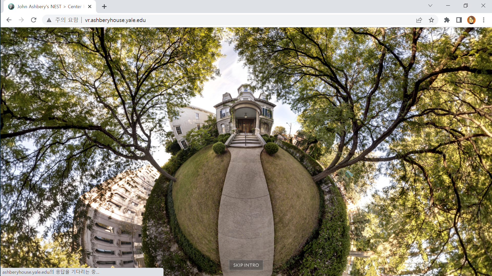
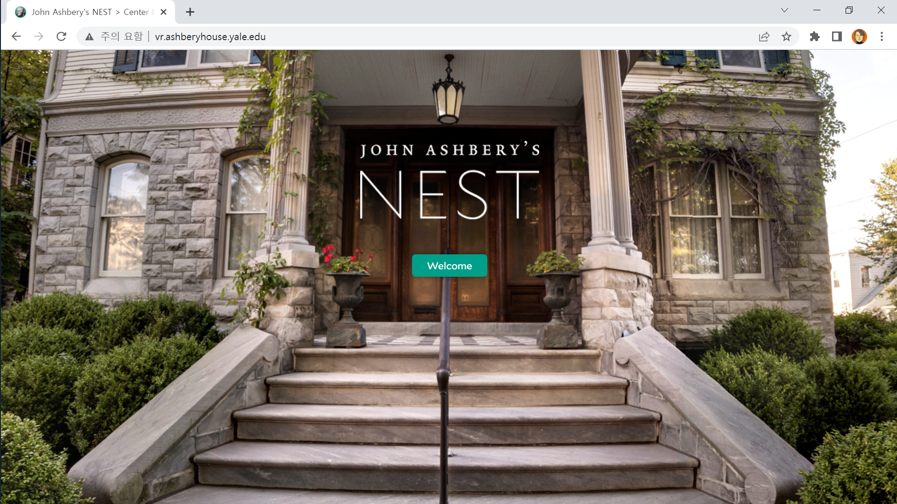
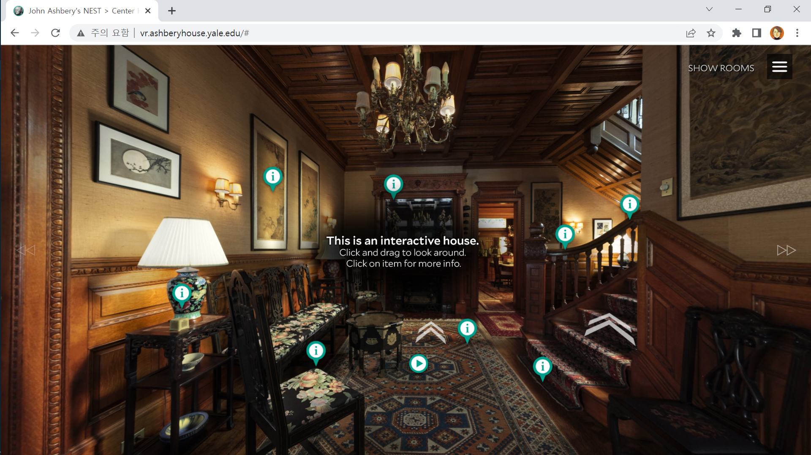
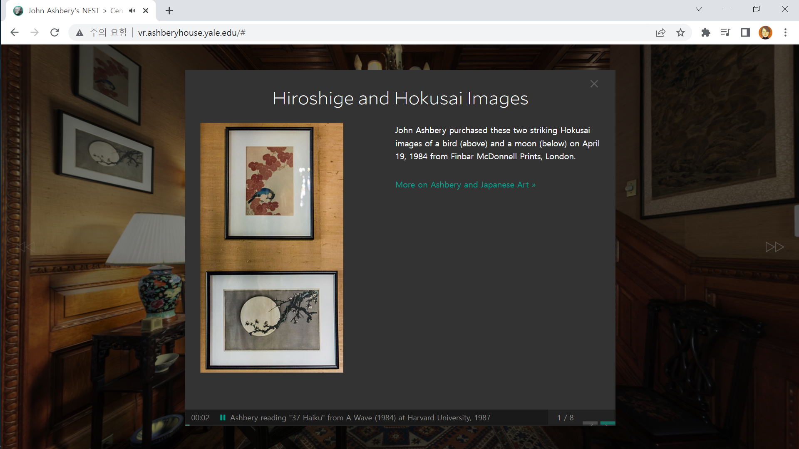

멀티미디어콘텐츠의 이해
Presented by 전가람, 지해인
목차
인문학에서 디지털 인문학으로:
시각적 인문학(Visual Humanities)을 위하여
가상현실과 시각적 스토리텔링
- 인문지식은 수천 년 동안 ‘글’이라는 이름의 문자 중심 텍스트 형식으로 기록되고 전승
- 인터넷과 같은 정보통신 네트워크가 가장 영향력 있는 지식 유통의 무대가 되면서, 시각적 인문학은 인문지식을 전달하는 텍스트가 문자에만 국한되지 않고 디지털 공간에서 시각적인 미디어를 통해 표현될 수 있게 함
가상현실과 시각적 스토리텔링
- 글(Text)의 시대에 융성했던 인문학이 데이터의 시대에도 여전히 유효하도록 할 수 있는 방법은?
- 단순히 논문 및 단행본 자료를 디지털상으로 옮기는 매체 전환을 의미하는 것이 아니라, 인문지식을 다루는 사람이 데이터 다루는 기술을 습득해서 지식의 재창조를 이뤄낼 수 있는 “인문학 연구와 교육의 디지털 전환(Digital Transformation)”을 의미
가상현실과 시각적 스토리텔링
- 역사적인 유래가 담긴 어떤 역사·문화도시에 대한 정보를 얻고자 했을 때, 그것을 종합적으로 조사하여 기록한 학술 보고서를 살펴본다고 가정하자.
- 보고서는 대부분 문자로 기술되어 있고, 참고 도판 몇 장 정도가 삽입되어 있는 정도이므로 묘사하려는 환경과 현장의 모습을 생생하게 확인할 수는 없음
가상현실과 시각적 스토리텔링
- 역사·문화도시에서 이야기되는 모든 사실과 마을의 자연 환경, 역사적인 유래와 유적, 그곳 주민들의 생업과 문화적인 이벤트, 특산물 등을 웹상에서 시각적으로 확인하는 장치를 마련한다면?
- 딱딱했던 학술 보고서는 그 자체로 즐기면서 배우는 문화콘텐츠로서의 기능을 발휘할 수 있게 될 것!
데이터의 시각화
- 데이터 시각화란?
- 시각적 인문학의 한 분야로 의미를 갖는 인문 데이터의 관계망이나 통계적 수치를 그래프 형태로 시각화하는 것
- 인문 연구의 분야에서 탐구하는 사실을 시각적으로 표현하기 위해서는 어떠한 형태의 데이터를 만들어야 할까?
- 표현하고자 하는 주제에 따라 시각화의 방법도 다양하게 선택될 수 있지만, 개체와 개체 사이의 관계를 그래프로 보여주는 네트워크 시각화는 가장 일반적으로 활용되고 있는 데이터 시각화 기술 중의 하나
데이터의 시각화
- 노드(node), 링크(link)
- 네트워크 그래프를 그리려면 두 종류의 데이터가 필요
- ‘노드’는 그물망 속에서 연결선이 만나는 접점(node)이 되는 개체의 목록이고, ‘링크’는 개체와 개체 사이를 연결(link)하는 관계성에 대한 목록
- SNS의 확산과 더불어 그 네트워크 양태를 분석하고자 하는 수요가 늘면서 네트워크 시각화 기술의 활용이 일반화되고, 이를 도와주는 다양한 소프트웨어들이 개발됨
- 인문학 연구와 교육도 이러한 시각화 기술의 도입을 통해 효과적인 표현과 의미 있는 발견을 추구할 수 있음
하이퍼미디어와 인문지식
- 하이퍼텍스트(hypertext)
- 의미의 연결고리를 좇아 무수한 텍스트 조각들이 자유롭게 연결되어 새로운 이야기를 만드는 것
- 하이퍼미디어(hypermedia)
- 디지털 환경에서 문자 텍스트와 함께 다른 미디어의 콘텐츠를 종합적으로 엮어내는 것
- 하이퍼미디어는 개별적인 모노미디어들을 의미 있는 문맥(context)으로 엮어 내는 ‘조합의 기술’이자, 그 연결이 종래의 문자 텍스트에 한정되지 않고 오감으로 체험하는 멀티미디어 콘텐츠로까지 확장되는 것을 의미
하이퍼미디어와 인문지식
- 전자지도 : 대상 세계의 공간적인 문맥을 보여주는 문맥 구현자의 역할
- 파노라마 영상 : 특정 장소에서 여러 가지 사물의 공간적 연관성을 보여주는 문맥 구현자의 역할
- 전자연표 : 사건의 시간적 선후나 인과 관계를 보여주는 문맥 구현자의 역할
- 네트워크 그래프 : 인물, 사건, 장소 등 다양한 개체들의 연관 관계를 그래프로 보여주는 문맥 구현자의 역할
모노미디어에서 멀티미디어로:
디지털 비주얼라이제이션, 그 기술의 역사
모노미디어에서 멀티미디어로
- 미디어(media)란?
- 바로 매체!
- 예) 소리의 매체는 공기!
- 즉, 정보를 전달하는, 또는 주고받는 수단
- 과거에는 편지 같은 아날로그적 미디어만이 사용됨
- IT 기술의 발전은 문자 위주의 전통적 미디어에서 TV와 같은 디지털 미디어로의 변화를 추동
모노미디어에서 멀티미디어로
- 모노미디어(monomedia)
- 하나의(mono) 매체만 활용하여 정보를 전달
- 텍스트, 소리, 그림 등

모노미디어에서 멀티미디어로

더 이상 하나의 매체만 고집할 필요가 없다!
모노미디어에서 멀티미디어로
- 멀티미디어(multimedia)
- 여러(multi) 매체를 동시에 활용하여 정보를 전달
- 화상통화(영상 + 소리), IPTV 등
- 단순히 여러 매체를 사용할 뿐 아니라, 상호 작용(interaction)이 가능해야 함
- 즉 정보의 쌍방향적 전달&가공이 가능해야 함
- TV는? 멀티미디어가 아니다!
모노미디어에서 멀티미디어로
- 멀티미디어의 등장 배경
- 네트워크 기술의 발전
- 인터넷으로 손쉬운 데이터 전송이 가능해짐

모노미디어에서 멀티미디어로
- 멀티미디어의 등장 배경
- 대용량 저장매체의 등장
- 다양한 형태의 정보를 가지고 있어 용량이 큰 멀티미디어를 손쉽게 저장할 수 있게 됨

모노미디어에서 멀티미디어로
- 멀티미디어의 등장 배경
- 데이터 압축 기술의 발달
- 정보량이 큰 멀티미디어를 손쉽게 압축하고 풀 수 있게 됨

모노미디어에서 멀티미디어로
![[디지털스토리]](https://user-images.githubusercontent.com/61646760/200285079-adc95b61-60b0-4602-b585-c42c92b6da72.png)
- 왜 멀티미디어?🤔
- 전통적 미디어에 비해 정보 전달력 측면에서 압도적!
모노미디어에서 멀티미디어로
- 인문학과 멀티미디어
- 인문콘텐츠는 전통적 미디어인 텍스트에 전적으로 의지해 옴
- 인문콘텐츠 역시 멀티미디어라는 새로운 매체와 결합함으로써 전달력 좋은, 다양한 형태로 생산되고 있음
- 멀티미디어를 활용한 인문콘텐츠의 실제 사례는 무엇이 있을까?
인문학+디지털 콘텐츠:
인문콘텐츠 히스토리
인문콘텐츠
- 인문콘텐츠(Humanities contents)란?
- 2002년 초 인문사회연구회 인문정책 연구과제 공모에서 처음 사용된 용어
- 인문콘텐츠, 역사콘텐츠와 같은 단순 범주적 구분이 아닌, 콘텐츠 창출의 원천이 인문학임을 밝힌 것
- 인문콘텐츠의 조건
- 콘텐츠의 원천이 인문학적 사고 및 축적물일 것
- 콘텐츠 개발 주체로서 인문학 전문가의 역할이 중요
- 인문학적 성과를 계승하며 새롭게 가치 창출
인문콘텐츠 사례 (1)
- 조선시대 전자문화지도 시스템
- 조선시대의 문화정보를 시간(Time)·공간(Place)·주제(Subject)의 입체 구조로 조직한 데이터베이스
- 2002년부터 5년간, 총 2기에 걸쳐 진행된 연구과제 결과물
- 지명, 지리지, 마을굿, 민요, 인구·경지 데이터베이스로 구성
링크 : 조선시대 전자문화지도 시스템
인문콘텐츠 사례 (1)
조선시대 전자문화지도 시스템 홈페이지
인문콘텐츠 사례 (1)
지명 데이터베이스 서비스 화면
인문콘텐츠 사례 (1)
‘삼천포’ 검색 결과 다양한 출처의 결괏값 도출
인문콘텐츠 사례 (1)
‘삼천포’에 관한 여러 정보 일체 열람 가능
인문콘텐츠 사례 (1)

다양한 범례 설정 옵션이 있는 지도 열람 가능
인문콘텐츠 사례 (2)
- 한국 기록유산 Encyves
- 데이터 기반 인문지식 백과사전의 모델을 제시하려는 목적으로 가지고 편찬된 주제 중심 디지털 백과사전
- 한국의 기록문화 유산 중 ‘한글고문헌’, ‘궁중기록화’, ‘민족기록화’, ‘불교 사찰의 승탑 비문’, ‘옛 인물의 초상화’ 등 다섯 영역을 연구 대상으로, 그에 속하는 대표적 기록물, 관련 지식 정보를 디지털 콘텐츠로 제작
- 네트워크 그래프, 가상현실 등 다양한 기술을 접목
링크 : 한국 기록유산 Encyves
인문콘텐츠 사례 (3)
위키(wiki) 형식으로 누구든 편찬자로 참여 가능
인문콘텐츠 사례 (3)
지식관계망, 가상현실 등 다양한 형태의 정보 제공
인문콘텐츠 사례 (3)
- 한국고전종합DB 인물관계정보
- 한국고전종합DB 내 곳곳에 흩어진 인물 정보를 보다 효율적이고 입체적으로 검색, 열람, 활용할 수 있도록 기획한 서비스 (현재 베타 서비스, 추후 정식 오픈)
- 한국고전종합DB 자료에서 인물 정보, 사건 정보를 추출하여 관계의 속성을 중심으로 정리
- 역사 인물 및 관련 사건을 일목요연하게 볼 수 있다는 장점이 있음
링크 : 한국고전종합DB 인물관계정보
인문콘텐츠 사례 (3)
이순신의 인물정보 및 관계인물 일목요연하게 열람 가능
인문콘텐츠 사례 (3)
명량대첩 클릭 시 사건정보 및 관계인물 열람 가능
인문콘텐츠 사례 (4)
- The Joyce Project
- Joyce Project의 목적은 현대 독자들의 독서에 종합적인 도움을 주는 제임스 조이스(James Joyce)의 율리시스(Ulysses) 온라인 판을 제공하는 것
- 율리시스는 독서 과정에서 독자의 지식 기반을 넘는 다양한 요소를 포함하는 복잡한 텍스트임
- 독서 도중에 필요한 정보에 즉각 접근할 수 있게 해 주는 하이퍼링크, 시각적 이미지 등을 활용
링크 : The Joyce Project
인문콘텐츠 사례 (4)
하이퍼링크로 텍스트 내 키워드들에 대한 여러 정보 제공
인문콘텐츠 사례 (5)
- Mao Kun Explorer
- 명나라 정화(鄭和)의 항해 과정을 국가별로, 현대의 지도와 비교하면서 시각화
- 총책임연구자 : Ryan Carpenter
- 색깔로 범례를 구분하고 관련된 용어를 Glossary라는 카테고리에 정리하는 등 편의성 도모
링크 : Mao Kun Explorer
인문콘텐츠 사례 (4)
항해의 과정을 두 지도를 비교하여 보여 줌
인문콘텐츠 사례 (6)
- John Ashbery’s Nest
- 미국 시인 존 애쉬베리(John Ashbery)의 빅토리아 시대의 집을 가상 투어할 수 있게끔 구축한 웹사이트
- 14개의 방과 232개의 오브젝트 및 그와 관련된 여러 정보로 구성
- 200개가 넘는 오디오 인터뷰 청취 가능
- 다양한 데이터를 활용한 VR 콘텐츠로 실감 나는 현장감 재현
링크 : John Ashbery’s Nest
인문콘텐츠 사례 (6)
접속하면 맨 처음 보이는 화면
인문콘텐츠 사례 (6)
Welcome 버튼을 눌러 입장
인문콘텐츠 사례 (6)
오브젝트를 클릭하거나 이동 가능
인문콘텐츠 사례 (6)
오브젝트를 클릭하면 나오는 추가적 정보들